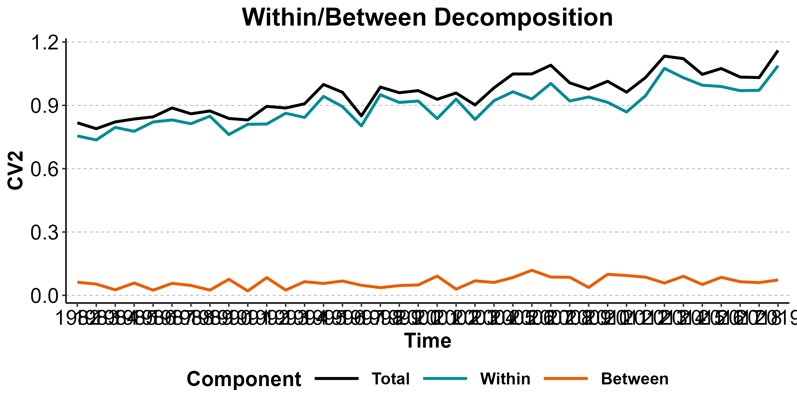
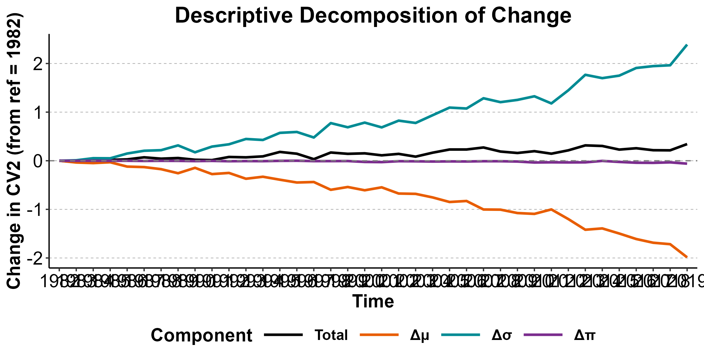
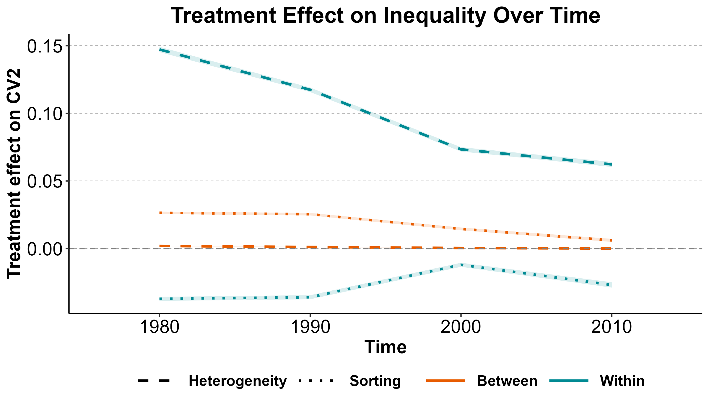
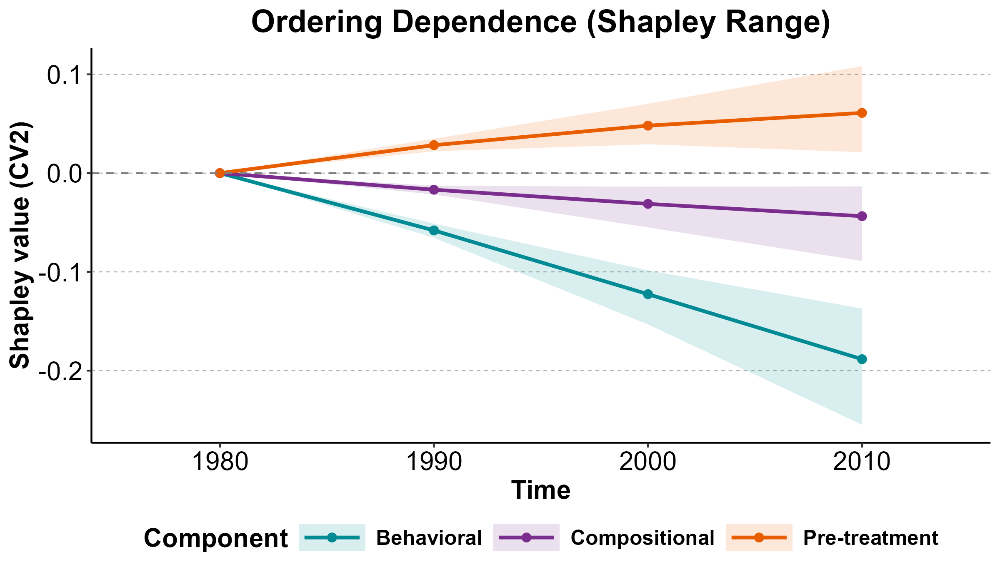

Two short worked examples. Both run on the package’s bundled
earnings_panel (a synthetic, CPS-style two-wave panel of
7,600 women, 1982–2020; see ?earnings_panel) and aim to
show the package’s two main modes — descriptive and causal — without
doing a full analysis.
- Example 1: Descriptive within/between decomposition
- Example 2: Causal decomposition — the motherhood penalty
Example 1: Descriptive within/between decomposition
Women in earnings_panel are grouped into low/middle/high
socioeconomic status (ses). We ask: how much earnings
inequality lies within each SES tier vs between tiers,
and how has that changed since 1982? For a clean annual cross-section we
use each woman’s first wave (post == 0).
desc <- ineqx(
y = "earnweek", ystat = "CV2",
group = "ses",
time = "year", ref = 1982,
weights = "earnwt",
data = subset(earnings_panel, post == 0)
)We use ystat = "CV2" (squared coefficient of variation,
)
rather than "Var" so that the high-income tier doesn’t
mechanically dominate the decomposition. "VL" (variance of
logs) is also accepted but is generally not recommended — see the
FAQ.
print(desc)
#> Descriptive variance decomposition
#> Inequality measure: CV2
#> Reference period: 1982
#> Ordering: shapley
#>
#> Totals by time:
#> time CV2W CV2B CV2T
#> 1982 0.7553 0.06219 0.8175
#> 1983 0.7361 0.05330 0.7894
#> 1984 0.7956 0.02597 0.8216
#> 1985 0.7771 0.05828 0.8354
#> 1986 0.8212 0.02440 0.8456
#> 1987 0.8311 0.05668 0.8878
#> 1988 0.8131 0.04695 0.8601
#> 1989 0.8488 0.02483 0.8736
#> 1990 0.7619 0.07605 0.8379
#> 1991 0.8103 0.02070 0.8310
#> 1992 0.8116 0.08374 0.8953
#> 1993 0.8626 0.02497 0.8876
#> 1994 0.8429 0.06463 0.9075
#> 1995 0.9427 0.05623 0.9989
#> 1996 0.8941 0.06791 0.9620
#> 1997 0.8027 0.04756 0.8503
#> 1998 0.9505 0.03630 0.9868
#> 1999 0.9138 0.04623 0.9600
#> 2000 0.9207 0.04921 0.9699
#> 2001 0.8375 0.09134 0.9289
#> 2002 0.9295 0.02917 0.9586
#> 2003 0.8332 0.06864 0.9019
#> 2004 0.9221 0.06098 0.9831
#> 2005 0.9643 0.08440 1.0487
#> 2006 0.9302 0.11880 1.0490
#> 2007 1.0038 0.08653 1.0903
#> 2008 0.9209 0.08580 1.0067
#> 2009 0.9396 0.03734 0.9769
#> 2010 0.9145 0.09964 1.0142
#> 2011 0.8687 0.09387 0.9625
#> 2012 0.9456 0.08618 1.0318
#> 2013 1.0752 0.05817 1.1334
#> 2014 1.0311 0.09023 1.1213
#> 2015 0.9955 0.05132 1.0469
#> 2016 0.9893 0.08531 1.0747
#> 2017 0.9697 0.06438 1.0341
#> 2018 0.9715 0.06029 1.0317
#> 2019 1.0878 0.07269 1.1605
#>
#> Decomposition of changes in CV2 relative to ref = 1982:
#>
#> time 1982: (reference)
#>
#> time 1983:
#> Between-group (delta_mu): -0.0362
#> Between-group: -0.0082
#> Within-group: -0.0279
#> Within-group (delta_sigma): 0.0094
#> Compositional (delta_pi): -0.0013
#> Between-group: -0.0006
#> Within-group: -0.0007
#> Total: -0.0281
#>
#> time 1984:
#> Between-group (delta_mu): -0.0482
#> Between-group: -0.0367
#> Within-group: -0.0115
#> Within-group (delta_sigma): 0.0523
#> Compositional (delta_pi): -0.0000
#> Between-group: 0.0004
#> Within-group: -0.0004
#> Total: 0.0041
#>
#> time 1985:
#> Between-group (delta_mu): -0.0312
#> Between-group: -0.0037
#> Within-group: -0.0275
#> Within-group (delta_sigma): 0.0501
#> Compositional (delta_pi): -0.0011
#> Between-group: -0.0003
#> Within-group: -0.0008
#> Total: 0.0179
#>
#> time 1986:
#> Between-group (delta_mu): -0.1202
#> Between-group: -0.0382
#> Within-group: -0.0820
#> Within-group (delta_sigma): 0.1485
#> Compositional (delta_pi): -0.0001
#> Between-group: 0.0004
#> Within-group: -0.0005
#> Total: 0.0281
#>
#> time 1987:
#> Between-group (delta_mu): -0.1307
#> Between-group: -0.0063
#> Within-group: -0.1244
#> Within-group (delta_sigma): 0.2054
#> Compositional (delta_pi): -0.0044
#> Between-group: 0.0008
#> Within-group: -0.0051
#> Total: 0.0703
#>
#> time 1988:
#> Between-group (delta_mu): -0.1733
#> Between-group: -0.0162
#> Within-group: -0.1571
#> Within-group (delta_sigma): 0.2172
#> Compositional (delta_pi): -0.0014
#> Between-group: 0.0010
#> Within-group: -0.0023
#> Total: 0.0426
#>
#> time 1989:
#> Between-group (delta_mu): -0.2568
#> Between-group: -0.0385
#> Within-group: -0.2183
#> Within-group (delta_sigma): 0.3155
#> Compositional (delta_pi): -0.0027
#> Between-group: 0.0012
#> Within-group: -0.0038
#> Total: 0.0561
#>
#> time 1990:
#> Between-group (delta_mu): -0.1460
#> Between-group: 0.0128
#> Within-group: -0.1588
#> Within-group (delta_sigma): 0.1737
#> Compositional (delta_pi): -0.0073
#> Between-group: 0.0011
#> Within-group: -0.0083
#> Total: 0.0204
#>
#> time 1991:
#> Between-group (delta_mu): -0.2746
#> Between-group: -0.0428
#> Within-group: -0.2319
#> Within-group (delta_sigma): 0.2911
#> Compositional (delta_pi): -0.0030
#> Between-group: 0.0013
#> Within-group: -0.0042
#> Total: 0.0135
#>
#> time 1992:
#> Between-group (delta_mu): -0.2507
#> Between-group: 0.0224
#> Within-group: -0.2730
#> Within-group (delta_sigma): 0.3381
#> Compositional (delta_pi): -0.0097
#> Between-group: -0.0008
#> Within-group: -0.0088
#> Total: 0.0778
#>
#> time 1993:
#> Between-group (delta_mu): -0.3704
#> Between-group: -0.0379
#> Within-group: -0.3325
#> Within-group (delta_sigma): 0.4476
#> Compositional (delta_pi): -0.0071
#> Between-group: 0.0006
#> Within-group: -0.0078
#> Total: 0.0701
#>
#> time 1994:
#> Between-group (delta_mu): -0.3290
#> Between-group: 0.0018
#> Within-group: -0.3308
#> Within-group (delta_sigma): 0.4274
#> Compositional (delta_pi): -0.0084
#> Between-group: 0.0006
#> Within-group: -0.0090
#> Total: 0.0900
#>
#> time 1995:
#> Between-group (delta_mu): -0.3899
#> Between-group: -0.0066
#> Within-group: -0.3834
#> Within-group (delta_sigma): 0.5736
#> Compositional (delta_pi): -0.0023
#> Between-group: 0.0006
#> Within-group: -0.0029
#> Total: 0.1814
#>
#> time 1996:
#> Between-group (delta_mu): -0.4476
#> Between-group: 0.0036
#> Within-group: -0.4512
#> Within-group (delta_sigma): 0.5920
#> Compositional (delta_pi): 0.0001
#> Between-group: 0.0022
#> Within-group: -0.0020
#> Total: 0.1445
#>
#> time 1997:
#> Between-group (delta_mu): -0.4375
#> Between-group: -0.0154
#> Within-group: -0.4221
#> Within-group (delta_sigma): 0.4781
#> Compositional (delta_pi): -0.0078
#> Between-group: 0.0008
#> Within-group: -0.0086
#> Total: 0.0328
#>
#> time 1998:
#> Between-group (delta_mu): -0.5976
#> Between-group: -0.0281
#> Within-group: -0.5695
#> Within-group (delta_sigma): 0.7743
#> Compositional (delta_pi): -0.0074
#> Between-group: 0.0022
#> Within-group: -0.0096
#> Total: 0.1693
#>
#> time 1999:
#> Between-group (delta_mu): -0.5398
#> Between-group: -0.0182
#> Within-group: -0.5216
#> Within-group (delta_sigma): 0.6884
#> Compositional (delta_pi): -0.0061
#> Between-group: 0.0022
#> Within-group: -0.0083
#> Total: 0.1425
#>
#> time 2000:
#> Between-group (delta_mu): -0.6074
#> Between-group: -0.0159
#> Within-group: -0.5915
#> Within-group (delta_sigma): 0.7844
#> Compositional (delta_pi): -0.0245
#> Between-group: 0.0029
#> Within-group: -0.0274
#> Total: 0.1524
#>
#> time 2001:
#> Between-group (delta_mu): -0.5468
#> Between-group: 0.0272
#> Within-group: -0.5739
#> Within-group (delta_sigma): 0.6862
#> Compositional (delta_pi): -0.0281
#> Between-group: 0.0020
#> Within-group: -0.0301
#> Total: 0.1114
#>
#> time 2002:
#> Between-group (delta_mu): -0.6744
#> Between-group: -0.0312
#> Within-group: -0.6432
#> Within-group (delta_sigma): 0.8250
#> Compositional (delta_pi): -0.0095
#> Between-group: -0.0018
#> Within-group: -0.0077
#> Total: 0.1411
#>
#> time 2003:
#> Between-group (delta_mu): -0.6811
#> Between-group: 0.0038
#> Within-group: -0.6849
#> Within-group (delta_sigma): 0.7772
#> Compositional (delta_pi): -0.0117
#> Between-group: 0.0026
#> Within-group: -0.0143
#> Total: 0.0844
#>
#> time 2004:
#> Between-group (delta_mu): -0.7542
#> Between-group: -0.0030
#> Within-group: -0.7512
#> Within-group (delta_sigma): 0.9361
#> Compositional (delta_pi): -0.0163
#> Between-group: 0.0018
#> Within-group: -0.0181
#> Total: 0.1656
#>
#> time 2005:
#> Between-group (delta_mu): -0.8486
#> Between-group: 0.0236
#> Within-group: -0.8722
#> Within-group (delta_sigma): 1.0934
#> Compositional (delta_pi): -0.0135
#> Between-group: -0.0014
#> Within-group: -0.0121
#> Total: 0.2312
#>
#> time 2006:
#> Between-group (delta_mu): -0.8279
#> Between-group: 0.0565
#> Within-group: -0.8844
#> Within-group (delta_sigma): 1.0744
#> Compositional (delta_pi): -0.0151
#> Between-group: 0.0001
#> Within-group: -0.0152
#> Total: 0.2315
#>
#> time 2007:
#> Between-group (delta_mu): -1.0027
#> Between-group: 0.0231
#> Within-group: -1.0259
#> Within-group (delta_sigma): 1.2853
#> Compositional (delta_pi): -0.0098
#> Between-group: 0.0012
#> Within-group: -0.0110
#> Total: 0.2728
#>
#> time 2008:
#> Between-group (delta_mu): -1.0059
#> Between-group: 0.0218
#> Within-group: -1.0277
#> Within-group (delta_sigma): 1.2052
#> Compositional (delta_pi): -0.0100
#> Between-group: 0.0018
#> Within-group: -0.0118
#> Total: 0.1892
#>
#> time 2009:
#> Between-group (delta_mu): -1.0757
#> Between-group: -0.0255
#> Within-group: -1.0503
#> Within-group (delta_sigma): 1.2514
#> Compositional (delta_pi): -0.0162
#> Between-group: 0.0006
#> Within-group: -0.0168
#> Total: 0.1594
#>
#> time 2010:
#> Between-group (delta_mu): -1.0930
#> Between-group: 0.0356
#> Within-group: -1.1286
#> Within-group (delta_sigma): 1.3259
#> Compositional (delta_pi): -0.0362
#> Between-group: 0.0019
#> Within-group: -0.0381
#> Total: 0.1967
#>
#> time 2011:
#> Between-group (delta_mu): -1.0014
#> Between-group: 0.0322
#> Within-group: -1.0336
#> Within-group (delta_sigma): 1.1789
#> Compositional (delta_pi): -0.0325
#> Between-group: -0.0005
#> Within-group: -0.0320
#> Total: 0.1450
#>
#> time 2012:
#> Between-group (delta_mu): -1.2001
#> Between-group: 0.0271
#> Within-group: -1.2272
#> Within-group (delta_sigma): 1.4492
#> Compositional (delta_pi): -0.0348
#> Between-group: -0.0031
#> Within-group: -0.0317
#> Total: 0.2143
#>
#> time 2013:
#> Between-group (delta_mu): -1.4192
#> Between-group: -0.0023
#> Within-group: -1.4169
#> Within-group (delta_sigma): 1.7679
#> Compositional (delta_pi): -0.0328
#> Between-group: -0.0017
#> Within-group: -0.0311
#> Total: 0.3159
#>
#> time 2014:
#> Between-group (delta_mu): -1.3919
#> Between-group: 0.0356
#> Within-group: -1.4275
#> Within-group (delta_sigma): 1.6990
#> Compositional (delta_pi): -0.0033
#> Between-group: -0.0076
#> Within-group: 0.0043
#> Total: 0.3038
#>
#> time 2015:
#> Between-group (delta_mu): -1.4968
#> Between-group: -0.0066
#> Within-group: -1.4902
#> Within-group (delta_sigma): 1.7506
#> Compositional (delta_pi): -0.0245
#> Between-group: -0.0043
#> Within-group: -0.0202
#> Total: 0.2294
#>
#> time 2016:
#> Between-group (delta_mu): -1.6100
#> Between-group: 0.0266
#> Within-group: -1.6366
#> Within-group (delta_sigma): 1.9080
#> Compositional (delta_pi): -0.0408
#> Between-group: -0.0035
#> Within-group: -0.0373
#> Total: 0.2571
#>
#> time 2017:
#> Between-group (delta_mu): -1.6863
#> Between-group: 0.0043
#> Within-group: -1.6907
#> Within-group (delta_sigma): 1.9463
#> Compositional (delta_pi): -0.0434
#> Between-group: -0.0021
#> Within-group: -0.0412
#> Total: 0.2166
#>
#> time 2018:
#> Between-group (delta_mu): -1.7163
#> Between-group: -0.0019
#> Within-group: -1.7144
#> Within-group (delta_sigma): 1.9638
#> Compositional (delta_pi): -0.0333
#> Between-group: -0.0000
#> Within-group: -0.0332
#> Total: 0.2142
#>
#> time 2019:
#> Between-group (delta_mu): -1.9868
#> Between-group: 0.0109
#> Within-group: -1.9977
#> Within-group (delta_sigma): 2.3896
#> Compositional (delta_pi): -0.0598
#> Between-group: -0.0005
#> Within-group: -0.0594
#> Total: 0.3430Within- vs between-group inequality over time:
plot(desc, type = "wibe")
Decomposition of the change since 1982 into contributions from changing means (), changing dispersions (), and changing group shares ():
plot(desc, type = "decomp")
rises from about 0.8 in 1982 to about 1.2 in 2019, and almost all of that inequality — and its growth — lies within SES tiers. The increase traces to growing within-group dispersion (), partly offset by rising mean earnings (), which lower for a given standard deviation. Shifts in the SES composition () play almost no role. This is the basic motivation for taking within-group inequality seriously.
Example 2: Causal decomposition — the motherhood penalty
Same dataset, now asking a causal question: how does motherhood affect earnings inequality among women, and how has that effect changed?
We restrict the sample to women with positive earnings and fit a
difference-in-differences model (treatment = mother,
post-period = post) with education-by-decade interactions
for both the mean and log-SD of earnings. GAMLSS does the heavy lifting
internally. For ystat = "CV2", keep the outcome in levels
and use post for the DiD contrast; applying
CV2 to first-differenced outcomes is not recommended.
df <- subset(earnings_panel, earnweek > 0)
causal <- ineqx(
y = "earnweek", ystat = "CV2",
treat = "mother", post = "post",
group = "educ",
time = "decade", ref = 1980,
formula_mu = ~ mother * post * educ * factor(decade) + age,
formula_sigma = ~ mother * post * educ * factor(decade),
weights = "earnwt",
se = "delta",
data = df
)
#> GAMLSS-RS iteration 1: Global Deviance = 397555473
#> GAMLSS-RS iteration 2: Global Deviance = 397532171
#> GAMLSS-RS iteration 3: Global Deviance = 397532169
#> GAMLSS-RS iteration 4: Global Deviance = 397532169Cross-sectional split: het and cov sub-components
The treatment effect on inequality at each time decomposes into
(between groups) and
(within groups). See the Model structure page
for the exact formulas.
plot(..., type = "wibe", stats = ...) shows all four series
at once:

The dominant series here is het_W — the
within-group component driven by the average treatment effect on log-SD
().
It is positive and large: motherhood widens within-education earnings
dispersion, though less so in later decades. The within-group
cov_W term is negative and the
between-group cov_B term (sorting of mean
effects
across education groups) is small and positive: the motherhood penalty
is largest in the lowest-earning education group, which widens
between-group gaps. Note this is exactly the kind of pattern that
mean-based methods miss.
Longitudinal: behavioral / compositional / pre-treatment
How has the motherhood effect’s contribution to inequality
changed since 1980? type = "shapley" displays the
three-channel decomposition with the range across the six possible
orderings:
plot(causal, type = "shapley")
The behavioral channel (, how motherhood’s per-group effects have changed) is the largest and negative — the motherhood penalties on both the mean and the dispersion of earnings have shrunk since 1980, so motherhood adds less to inequality than it used to. The compositional channel () is also negative: the share of women who become mothers has fallen. Pre-treatment shifts (, changes in baseline inequality) push in the opposite direction: because baseline earnings have become more unequal, the same treatment effects now contribute more to inequality.
A more thorough analysis would add controls for race, marital status,
and age splines; would model the pre-trends formally; and would use
bootstrap rather than delta-method SEs. See ?ineqx,
?boot_config, and the Tutorial
for the full toolbox.